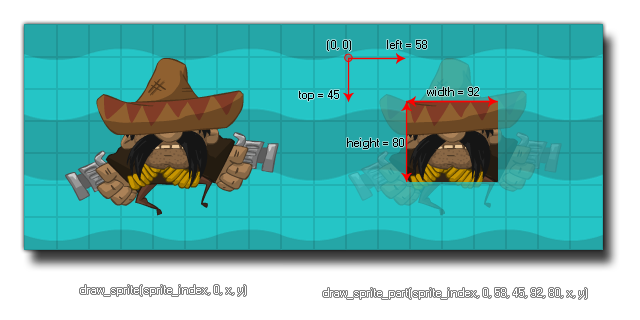

draw_sprite_part(sprite, subimg, left, top, width, height, x, y);
| Streit | Beschreibung |
|---|---|
| sprite | Der Index des zu zeichnenden Sprites. |
| subimg | Der Subimg (Rahmen) des zu zeichnenden Sprites (image_index oder -1 entspricht dem aktuellen Animationsrahmen des Objekts). |
| left | Die X-Position auf dem Sprite der oberen linken Ecke des zu zeichnenden Bereichs. |
| top | Die y-Position auf dem Sprite der oberen linken Ecke des zu zeichnenden Bereichs. |
| width | Die Breite des zu zeichnenden Bereichs. |
| height | Die Höhe des zu zeichnenden Bereichs. |
| x | Die x-Koordinate, an der das Sprite gezeichnet werden soll. |
| y | Die y-Koordinate, an der das Sprite gezeichnet werden soll. |
Rückkehr: N / A
Mit dieser Funktion können Sie Teile eines beliebigen Sprites an einer bestimmten Position im Raum zeichnen. Wie mit draw_sprite Sie können ein Sprite und ein Teilbild für das Zeichnen angeben. Dann müssen Sie die relativen Koordinaten im Sprite des Bereichs angeben, den Sie zum Zeichnen auswählen möchten. Dies bedeutet, dass eine linke Position von 0 und eine obere Position von 0 die obere linke Ecke des Sprites wäre und alle weiteren Koordinaten von dieser Position genommen werden sollten. Das Bild unten zeigt ein Beispiel wie das funktioniert: 
Sie sollten beachten, dass diese Funktion möglicherweise nicht wie erwartet funktioniert, wenn die Strukturseite das automatische Zuschneiden zulässt, da der zusätzliche "leere" Bereich um das Sprite herum zum Erstellen der Texturseite entfernt wurde. Um dieses Problem zu beheben, müssen Sie die Einstellungen für die Texturseite (im Texture Group Editor ) festlegen, um die Option Automatisches Zuschneiden zu deaktivieren.
draw_sprite_part(sprite_index, image_index, 4, 0, sprite_width-16, sprite_height-16, x, y );
Dadurch werden die den Instanzen zugewiesenen Sprites (sprite_index) und der aktuelle Animationsrahmen (image_index) gezeichnet, jedoch wird ein 4px Rand von der Breite auf beiden Seiten und ein 8 Pixel Rand von der Höhe vom unteren Rand des ursprünglichen 24x24 Pixel entfernt Sprite.